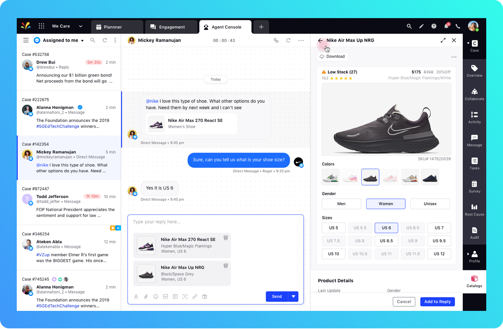
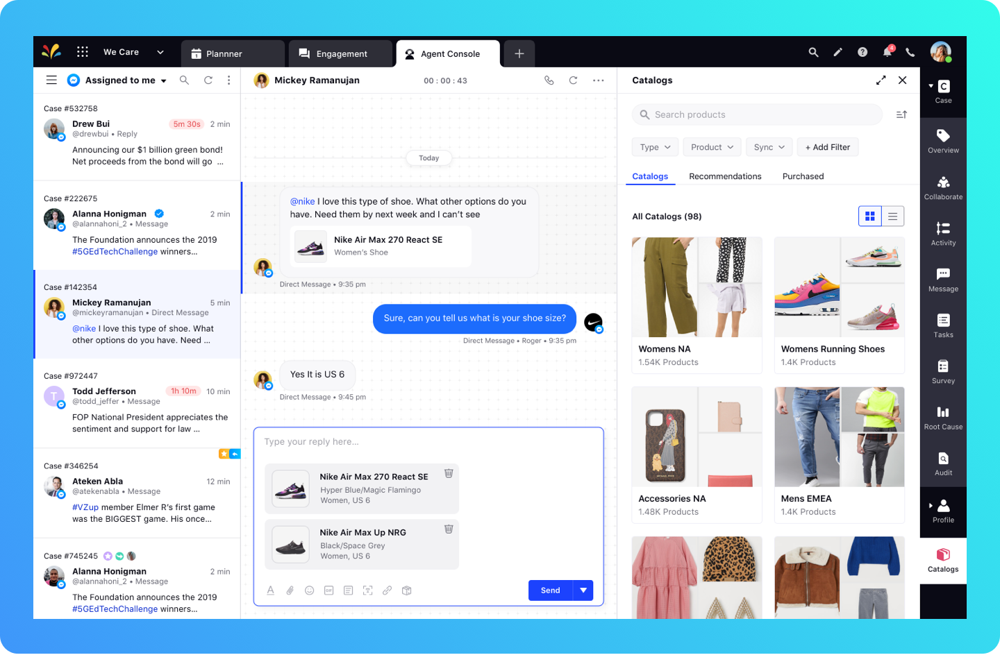
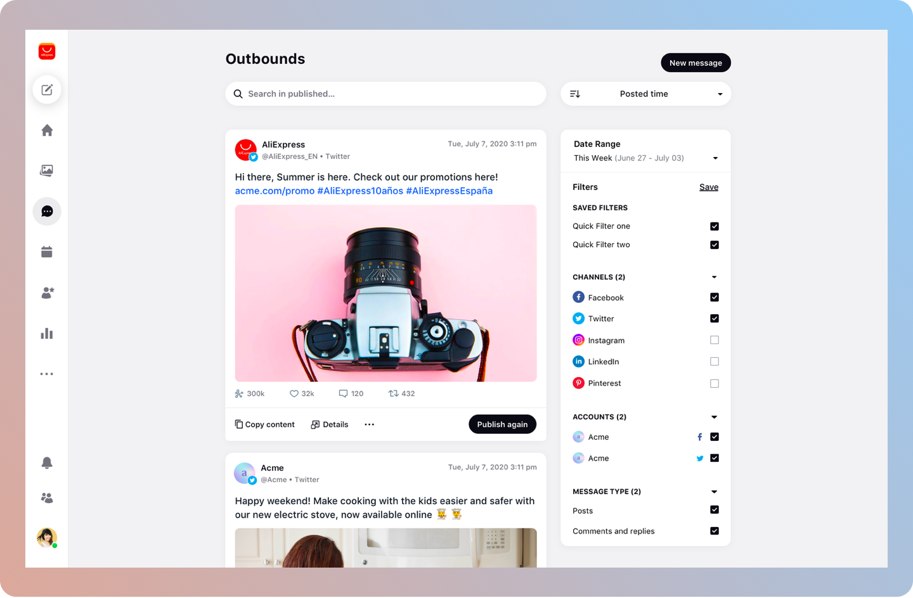

Integrated the Product Catalogue in the Agent Console allowing the agents to view catalogues, find relevant products, and share it with users. It has been designed in a way that agents can make intricate selection of products including sizes, colors etc. A similar workflow can also be triggered from Engagement Dashboard.

Product Detail Section which allows selection of variants to send to users

All Catalogues Section

All Products Section in a Catalogue
Next Steps
👉 Review designs as they are being developed
👉 Replicate similar workflow in new Care Console